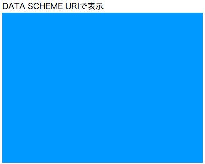
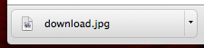
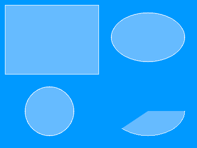
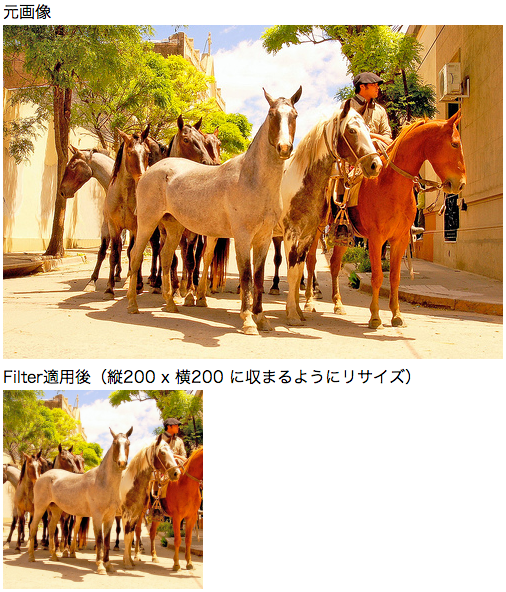
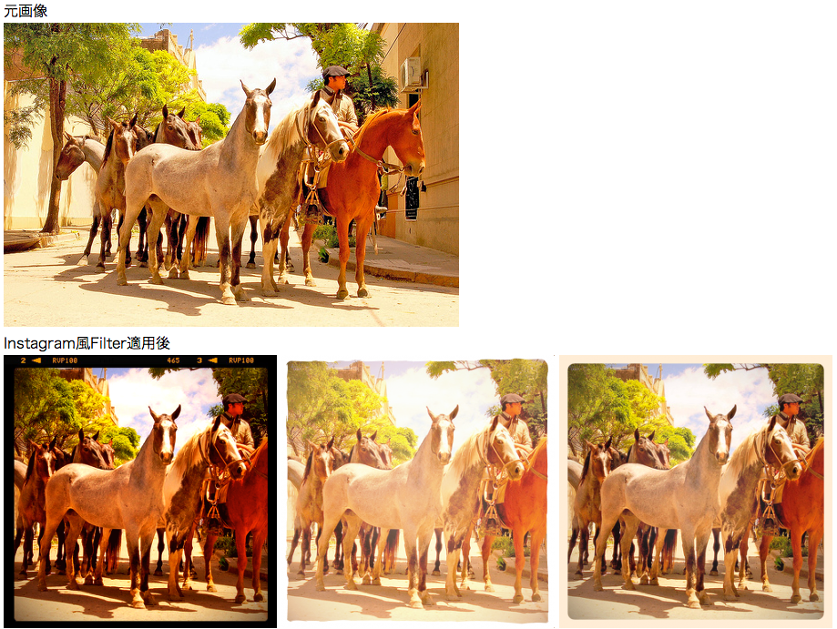

github.com/demouth/DmImage
github download @demouth<?php // SplClassLoaderを使用する場合 require_once 'SplClassLoader.php'; $DmDirPath = '/path/to/lib/'; $classLoader = new SplClassLoader(null, $DmDirPath); $classLoader->register();
<?php // SplClassLoaderを使用せず、1ファイル毎読み込む場合 $DmDirPath = '/path/to/lib/'; require_once $DmDirPath.'Dm/Color.php'; require_once $DmDirPath.'Dm/Image.php'; require_once $DmDirPath.'Dm/Image/Graphic/Interface.php'; require_once $DmDirPath.'Dm/Image/Graphic/Text.php'; require_once $DmDirPath.'Dm/Image/Graphic/Shape.php'; require_once $DmDirPath.'Dm/Image/File.php'; require_once $DmDirPath.'Dm/Image/Filter/Abstract.php'; require_once $DmDirPath.'Dm/Image/Filter/Fit.php'; require_once $DmDirPath.'Dm/Image/Filter/Crop.php'; require_once $DmDirPath.'Dm/Image/Filter/InstagramNormal.php'; require_once $DmDirPath.'Dm/Image/Filter/InstagramLoFi.php'; require_once $DmDirPath.'Dm/Image/Filter/InstagramWalden.php'; require_once $DmDirPath.'Dm/Image/Filter/InstagramToaster.php';
<?php $image = new Dm_Image(400,300, 0xFF0099FF); $image->display(); exit;
<?php $image = new Dm_Image(400,300, 0xFF0099FF); ?><!DOCTYPE html> <head> <meta charset="UTF-8" /> </head> <body> DATA SCHEME URIで表示 <br> <img src="<?= $image->toDataSchemeURI() ?>"> </body> </html>このコードで出力すると実際に出力されるimgタグは次のようになっています。
<img src="data:image/png;base64,iVBORw0KGgoAAAANSUhEUgAAAZAAAAEsCAYAAADtt+ XCAAAEPElEQVR4Xu3VMQ3AMBDAwDT8CRTtl0CkqJ7vZu9+1juzAOCnfQsA4MRAAEgMBIDEQABIDAS AxEAASAwEgMRAAEgMBIDEQABIDASAxEAASAwEgMRAAEgMBIDEQABIDASAxEAASAwEgMRAAEgMBIDE QABIDASAxEAASAwEgMRAAEgMBIDEQABIDASAxEAASAwEgMRAAEgMBIDEQABIDASAxEAASAwEgMRAA EgMBIDEQABIDASAxEAASAwEgMRAAEgMBIDEQABIDASAxEAASAwEgMRAAEgMBIDEQABIDASAxEAASA wEgMRAAEgMBIDEQABIDASAxEAASAwEgMRAAEgMBIDEQABIDASAxEAASAwEgMRAAEgMBIDEQABIDAS AxEAASAwEgMRAAEgMBIDEQABIDASAxEAASAwEgMRAAEgMBIDEQABIDASAxEAASAwEgMRAAEgMBIDE QABIDASAxEAASAwEgMRAAEgMBIDEQABIDASAxEAASAwEgMRAAEgMBIDEQABIDASAxEAASAwEgMRAA EgMBIDEQABIDASAxEAASAwEgMRAAEgMBIDEQABIDASAxEAASAwEgMRAAEgMBIDEQABIDASAxEAASA wEgMRAAEgMBIDEQABIDASAxEAASAwEgMRAAEgMBIDEQABIDASAxEAASAwEgMRAAEgMBIDEQABIDAS AxEAASAwEgMRAAEgMBIDEQABIDASAxEAASAwEgMRAAEgMBIDEQABIDASAxEAASAwEgMRAAEgMBIDE QABIDASAxEAASAwEgMRAAEgMBIDEQABIDASAxEAASAwEgMRAAEgMBIDEQABIDASAxEAASAwEgMRAA EgMBIDEQABIDASAxEAASAwEgMRAAEgMBIDEQABIDASAxEAASAwEgMRAAEgMBIDEQABIDASAxEAASA wEgMRAAEgMBIDEQABIDASAxEAASAwEgMRAAEgMBIDEQABIDASAxEAASAwEgMRAAEgMBIDEQABIDAS AxEAASAwEgMRAAEgMBIDEQABIDASAxEAASAwEgMRAAEgMBIDEQABIDASAxEAASAwEgMRAAEgMBIDE QABIDASAxEAASAwEgMRAAEgMBIDEQABIDASAxEAASAwEgMRAAEgMBIDEQABIDASAxEAASAwEgMRAA EgMBIDEQABIDASAxEAASAwEgMRAAEgMBIDEQABIDASAxEAASAwEgMRAAEgMBIDEQABIDASAxEAASA wEgMRAAEgMBIDEQABIDASAxEAASAwEgMRAAEgMBIDEQABIDASAxEAASAwEgMRAAEgMBIDEQABIDAS AxEAASAwEgMRAAEgMBIDEQABIDASAxEAASAwEgMRAAEgMBIDEQABIDASAxEAASAwEgMRAAEgMBIDE QABIDASAxEAASAwEgMRAAEgMBIDEQABIDASAxEAASAwEgMRAAEgMBIDEQABIDASA5AOLiwTvg1OqX wAAAABJRU5ErkJggg==">
<?php
$image = new Dm_Image(400,300, 0xFF0099FF);
$image->textGraphics
->setColor(0xFFFFFFFF)
->setFontSize(30)
->textTo(80, 150, 'Hello world.')
;
$image->saveTo('/path/to/dir/saved_image.png');
$image->saveTo('/path/to/dir/saved_image.jpg');
$image->saveTo('/path/to/dir/saved_image.jpeg');
$image->saveTo('/path/to/dir/saved_image.gif');
<?php
$image = new Dm_Image(400,300, 0xFF0099FF);
$image->startDownload('download','jpg',50);

<?php $color = Dm_Color::argb(1, 255, 0, 0); //RGB指定 $color->v *= 0.5; //明度を半分に（HSV） $image = new Dm_Image(400,300, $color->toInt()); $image->display(); exit;
<?php $image = new Dm_Image(400,300, 0xFF0099FF); $image->graphics->drawRect(20, 100, 360, 100); $image->display(); exit;
<?php $image = new Dm_Image(400,300, 0xFF0099FF); $image->graphics ->lineStyle(0,0) ->fillStyle(0xFFFFFFFF) ->drawRect(70, 40, 200, 150) ->lineStyle(10,0x6600FFFF) ->fillStyle(0) ->drawRect(100, 70, 200, 150) ->lineStyle(20,0xFF3300FF) ->fillStyle(0x9900AAFF) ->drawRect(130, 100, 200, 150) ; $image->display(); exit;
<?php $image = new Dm_Image(400,300, 0xFF0099FF); $image->graphics ->lineStyle(1,0xFFFFFFFF) ->fillStyle(0xFF66BBFF) ->drawRect(10, 10, 190, 140) ->drawCircle(100, 225, 50) ->drawEllipse(300, 75, 150, 100) ->drawPie(300, 225, 150, 100, 0, 135) ; $image->display(); exit;
<?php $image = new Dm_Image(400,300, 0xFF0099FF); $image->graphics ->lineStyle(1,0xFFFFFFFF) ->fillStyle(0x99001199) ->beginLineFill() ->moveTo(200, 10) ->lineTo(230, 100) ->lineTo(340, 100) ->lineTo(250, 160) ->lineTo(300, 290) ->lineTo(200, 190) ->lineTo(100, 290) ->lineTo(150, 160) ->lineTo(60, 100) ->lineTo(170, 100) ->lineTo(200, 10) ->endLineFill() ; $image->display(); exit;
<?php
$image = new Dm_Image(400,300, 0xFF0099FF);
$image->textGraphics
//->setFontFile('path/to/fontfile.ttf') //フォント指定したい場合
->setColor(0xFFFFFFFF)
->setFontSize(30)
->textTo(70, 230, 'Hello world.',45)
->setColor(0xFF000000)
->textTo(244, 210, '日本語。',45)
->setColor(0xFFFFFFFF)
->textTo(240, 210, '日本語。',45)
;
$image->display();
exit;
<?php $originalImagePath = './horse.jpeg'; $width = 200; $height = 200; $fitFilter = new Dm_Image_Filter_Fit($width,$height,true); $cropFilter = new Dm_Image_Filter_Crop($width,$height); $image = new Dm_Image_File($originalImagePath); $image->applyFilters(array( $fitFilter, $cropFilter )); ?><!DOCTYPE html> <head> <meta charset="UTF-8" /> </head> <body> <div> 元画像<br> <img src="<?=$originalImagePath?>"> </div> <div> Filter適用後（縦<?=$width?> x 横<?=$height?> に収まるようにリサイズ）<br> <img src="<?=$image->toDataSchemeURI()?>" /> </div> </body> </html>
<?php $originalImagePath = './horse.jpeg'; $filter1 = new Dm_Image_Filter_InstagramLoFi(300,1); $filter2 = new Dm_Image_Filter_InstagramWalden(300,2); $filter3 = new Dm_Image_Filter_InstagramToaster(300); $image1 = new Dm_Image_File($originalImagePath); $image1->applyFilter($filter1); $image2 = new Dm_Image_File($originalImagePath); $image2->applyFilter($filter2); $image3 = new Dm_Image_File($originalImagePath); $image3->applyFilter($filter3); ?><!DOCTYPE html> <head> <meta charset="UTF-8" /> </head> <body> <div> 元画像<br> <img src="<?=$originalImagePath?>"> </div> <div> Instagram風Filter適用後<br> <img src="<?=$image1->toDataSchemeURI()?>" /> <img src="<?=$image2->toDataSchemeURI()?>" /> <img src="<?=$image3->toDataSchemeURI()?>" /> </div> </body> </html>
<?php $filter = new Dm_Image_Filter_Fit(400,400); $image = new Dm_Image_File(dirname(__FILE__).'/horse.jpeg'); $image->applyFilter($filter); $logoImage = new Dm_Image_File(dirname(__FILE__).'/php.gif'); $image->draw($logoImage,20,20); $image->display(); exit;